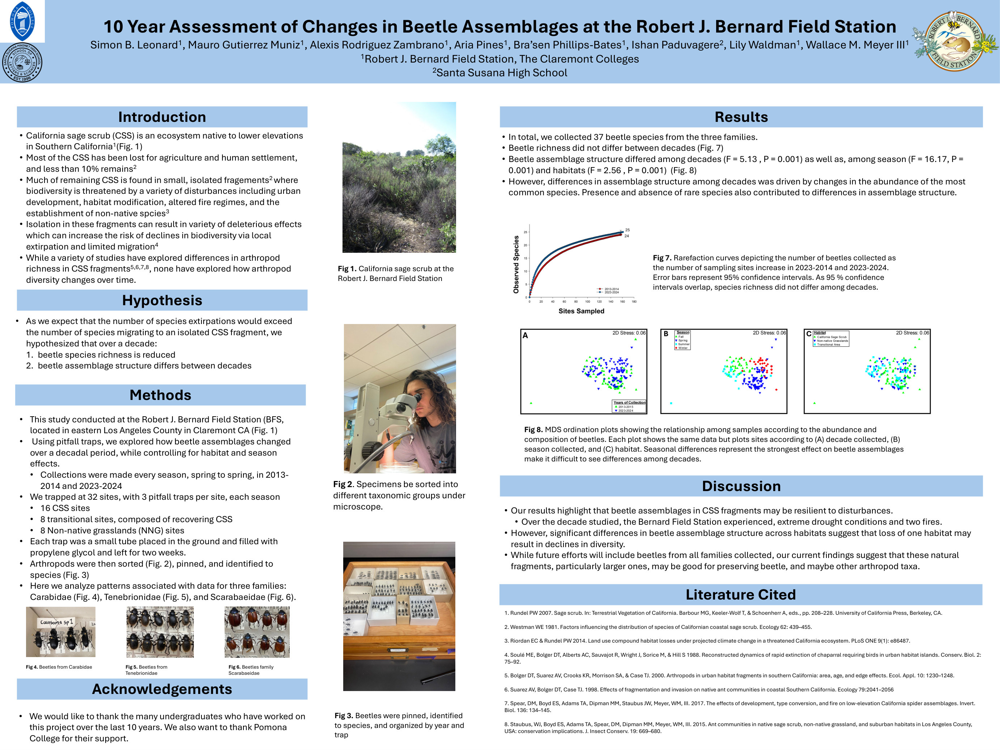
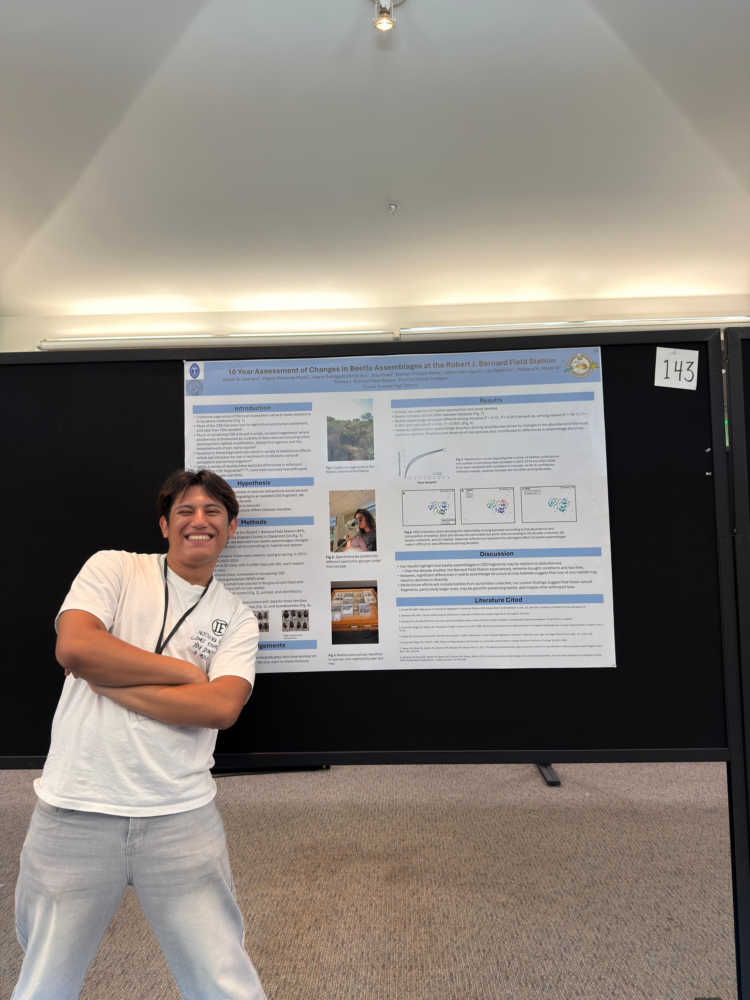

- My role
- Research assistant · poster co-author
- Duration
- ~4 months, beyond scheduled course work
- Study site
- Robert J. Bernard Field Station, Claremont, CA
- Comparison
- 2013–14 vs. 2023–24 · 32 sites
Turning field samples into research-ready data.
Over about four months, including extra hours outside the course, I worked on the specimen and data stage of the project, the step that connects field collections to statistical analysis. I am listed as a co-author on the resulting poster.
Specimen processing & inventory
Sorted, pinned and inventoried beetles from pitfall-trap samples, organised by year, site and trap.
Family-level identification
Identified beetles to family from morphological characters as the first taxonomic step before species-level work.
Data organisation
Kept specimen records consistent so collections ten years apart could be compared in one dataset.
Species-level identification (including genetic identification) and the final community analysis were carried out by other members of the research team.
Stable richness, changing communities.
Less than 10% of California sage scrub remains, mostly in small, isolated fragments. The team compared beetles (Carabidae, Tenebrionidae and Scarabaeidae) collected with pitfall traps across sage scrub, transitional and non-native grassland sites a decade apart.
Species richness did not differ between decades, but assemblage structure did (F = 5.13, p = 0.001), mainly through changes in the abundance of common species. Season and habitat also had significant effects, suggesting these fragments may be resilient to disturbance, while losing any one habitat could still reduce diversity.
The poster.

10 Year Assessment of Changes in Beetle Assemblages
Leonard, Gutierrez Muniz, Rodriguez Zambrano, et al. Robert J. Bernard Field Station, The Claremont Colleges. Click to enlarge.

With the poster
Presenting the collaborative research.
How specimens become data.
The project showed me the full workflow of an ecological study, from field samples to taxonomy, data management and statistics, and how each stage depends on careful, consistent work in the one before it.
Specimen handling · Morphological identification · Inventory & record keeping · Quality control · Collaborative research